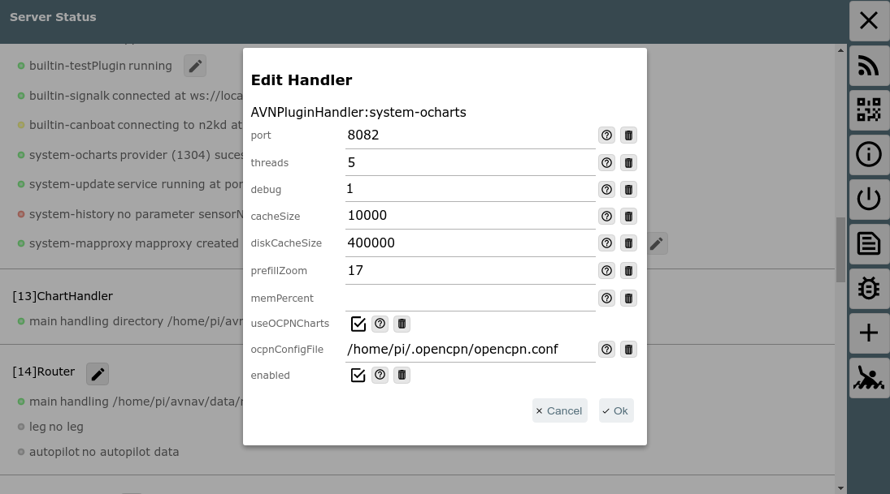

erreichbar ist.
erreichbar ist.Hinweis: ab 2024/02/17 gibt es eine neue (Beta) Version für den Ocharts-Support. Diese läuft auch unter Android. Für eine Beschreibung siehe OchartsNG.
=== nicht für Android ===
AvNav kann Karten in den verschiedenen Raster-Formaten verarbeiten. Bisher war es aber nicht in der Lage, offiziell verfügbare Seekarten zu lesen und anzuzeigen. Seit einiger Zeit gibt es die Firma o-charts, die Karten für viele Gebiete der Erde für OpenCPN bereitstellt.
Nach einigen Absprachen mit der Firma können diese Karten nun (ab Version 20200515 mit einem Plugin - s.u.) auch für AvNav genutzt werden. Bisher können die oesenc Vektor-Karten genutzt werden und ab Version 20220225 (und den zugehörigen Änderungen im o-charts shop - siehe unter releases) können die oeRNC Raster Karten genutzt werden.
Um die Karten in AvNav darzustellen, müssen sie zunächst einmal in Raster Karten umgewandelt werden. Das erledigt ein neues Plugin für AvNav (avnav-ocharts). Die Umwandlung erfolgt dabei im laufenden Betrieb immer dann, wenn die Karten dargestellt werden sollen (teilweise initial in einen cache). Damit kann mit diesen Karten weitgehend normal gearbeitet werden ohne dass man sich um diesen Prozess kümmern muss.
Das Handling der Karten erfolgt dabei vollständig durch das Plugin - das
betrifft auch die Installation (die Karten können nicht über die normale Download-Seite hochgeladen
werden). Das Plugin hat dazu eine eigene GUI, die von der Hauptseite über
den Button  (User
Apps) und dort über den Button Ocharts-Provider erreichbar ist.
(User
Apps) und dort über den Button Ocharts-Provider erreichbar ist.

Wichtiger Hinweis: Wenn man keinen Dongle von o-charts hat, sind die Karten an das System gebunden. Wenn es daher beim Einbringen oder bei der Nutzung der Karten Probleme gibt, bitte nicht das System neu aufsetzen - sondern eine Reparatur versuchen. Wenn man das System neu aufsetzt, werden die Lizenzen ungültig. Ich helfe gerne bei Problemen - Kontakt z.B. per email.
Nur bei Nutzung der AvNav Images ist auch ein update der Images möglich. Bitte im Zweifel vorher testen.
Um bei ocharts Karten kaufen zu können, muss dort zunächst ein Konto angelegt werden.
Anschliessend muss man seine Systeme, auf denen man die Karten nutzen möchte auf der Seite von o-charts registrieren. AvNav benutzt dabei den "Offline" Prozess .
Dieser besteht aus den folgenden Schritten:
Für Updates werden die Schritte 4,5 und 6 wiederholt (bei 4 nur Anforderung des Updates).
Für weitere Kartensätze Schritte 3-6.
Für die Schritte 2,3,4 und 5 wird natürlich ein System mit Internet-Verbindung benötigt. Das kann z.B. ein Laptop oder auch ein Android Tablet sein.
Für den Ablauf des Prozesses habe ich ein Video gemacht, um ihn zu verdeutlichen. Hier noch einmal eine kurze Beschreibung dazu.
Hinweis: Wenn die Karten auf dem gleichen System bereits für OpenCPN registriert sind, dann kann man direkt mit Schritt 6 starten. Als Alternative der Zugriff auf die OpenCPN Kartenverzeichniss mit o-charts Karten auch im Plugin konfiguriert werden.
Über  ->auf die Oberfläche des
Plugins gehen, dort den Tab "Charts" auswählen.
->auf die Oberfläche des
Plugins gehen, dort den Tab "Charts" auswählen.

Mit "Get Fingerprint" die Erzeugung des Fingerprints anstossen. Falls man einen Dongle von o-charts benutzt, den Fingerprint über "Get Fingerprint(Dongle)" erzeugen.

Im Dialog die erzeugte Datei auf meinem Gerät speichern.
Auf die o-charts Seite gehen und den Fingerprint hochladen.

Mit Choose File die unter 2. gespeicherte Datei wählen. Dazu einen sinnvollen Namen vergeben (dieser findet sich später in den Mails mit den Download Links).
Bei o-charts aus den verfügbaren oeSENC Karten die gewünschten kaufen.

Bei 1 kann die Zuordnung zu einem angelegten System erfolgen (hier nicht mehr möglich, weil die Karten bereits zu den 2 maximal verfügbaren Systemen zugeordnet sind). Bei 2 wird dann die Mail mit dem Download-Link angefordert (das erfolgt auch bei Updates - hier im Bild zu sehen: Die letzte abgerufene Version ist 21, verfügbar ist 23).

Nach kurzer Zeit erhält man von o-charts eine Mail mit dem Download-Link. Diese Datei (zip) herunterladen.
6. Hochladen der Zip-Datei zu AvNav.

In der GUI des o-chart plugins über "Upload Zip" die im Schritt 5. heruntergeladene Datei zu AvNav hochladen.
Während des Uploads wird ein Fortschritt angezeigt.

Am Ende des Uploads wird auf dem AvNav Server die Datei ausgepackt, und es werden einige Prüfungen durchgeführt (das kann einige Sekunden dauern).
Die Karten werden (falls nicht anders konfiguriert) in das Verzeichnis /home/pi/avnav/data/ocharts/charts hochgeladen.

Wenn alle Prüfungen erfolgreich waren, wird angeboten sofort das Plugin zu restarten um die Karten nutzen zu können.
Falls es sich bei den neu hochgeladenen Karten um ein Update schon vorhandener Karten handelt, wírd der vorhandene Satz deaktiviert und der neue Satz aktiviert (beim Restart). Das kann in der GUI später geändert werden. Nicht mehr benötigte Sätze können hier gelöscht werden.
Beim Restart kommt es kurzzeitig zu einigen Fehlermeldungen, aber nach max. 30s sollte der Status zumindest wieder gelb sein (das Plugin liest jetzt alle vorhandenen Karten).
Wenn die Karten erfolgreich geladen werden konnten, sollte am Ende der Status für die Karten auf grün (READY) gehen.

Falls der Status zu "ERROR" (rot) wird, wurde u.U. ein Zip-File hochgeladen, was für ein anderes System zugeordnet war. Details kann man im Log File (/home/pi/avnav/data/ocharts/provider.log) sehen.
Nun sind die Karten verfügbar und können genutzt werden.
Unter dem Tab Status kann man etwas mehr Details erhalten.

Im Bild ist zu sehen, das nach dem Hochladen jetzt automatisch bereits eine Erzeugung von Kartenkacheln angelaufen ist ("Cache Prefill"). Das sorgt dafür, das die Verzögerungen, die sonst bei der Nutzung durch die begrenzten Resourcen des Raspberry Pi entstehen können, verringert werden. Dazu wird nach einem bestimmten Verfahren ein Teil der Kacheln im Bereich des Kartensatzes vorab erzeugt und in einem Cache File gespeichert.
Trotzdem können die Karten auch bereits unmittelbar genutzt werden.


Wie bereits erwähnt, kann es bei der erstmaligen Nutzung in einem bestimmten Bereich zu Verzögerungen kommen (insbesondere auf den kleineren/älteren Pi's) - nach der erstmaligen Nutzung sind die Kacheln für den Bereich aber im Cache-Speicher und die Verzögerungen sind minimal.
Da die O-charts Karten zunächst als Vektorkarten vorhanden sind, kann in weiten Bereichen das Aussehen der Karten angepasst werden. Dabei sind allerdings einige Einschränkungen zu beachten:
Die Veränderung der Parameter erfolgt über die GUI des Plugins ( ->),
Tab "Main Settings".
->),
Tab "Main Settings".

Wenn eine Einstellung geändert wird (1) wird der Parameter fett dargestellt. Die Änderungen werden erst wirksam, wenn "Update Settings"(2) angeklickt wird.
Mit Cancel können die Änderungen zurückgenommen werden, Defaults setzt die Einstellungen auf Default-Werte. Die Parameter entsprechen weitgehend den bei OpenCPN vorhandenen Settings.
Die folgende Tabelle listet die Einstellungen.
| Name | Bedeutung | Default |
| Show Text | Zeige Texte zu den Objekten auf der Karte | true |
| Important Text Only | Verberge weniger wichtige Texte | false |
| Light Descriptions | Beschreibungen für Feuer | true |
| Extended Light Sectors | Sektoren für Feuer | true |
| Show Depth | Zeige Tiefen Werte | true |
| Chart Information Objects | spezielle Objekte auf der Karte | true |
| Buoy/Light Labels | Bezeichnungen für Feuer/Tonnen | true |
| National text on chart | Nationale Texte | true |
| Show Lights | Zeige Feuer | true |
| Reduced Detail at Small Scale | Reduziere die Details auf geringeren Zoom-Leveln | true |
| De-Cluttered Text | Bessere Anordnung der Texte | true |
| Display Category | Art der Darstellung (Base,Standard,All,User Standard) | All |
| Graphics Style | Grafische Darstellung (Paper Chart, Simplified) | Paper Chart |
| Boundaries | Art der Begrenzungen (Plain, Symbolized) | Plain |
| Colors | Farben (4 Color, 2 Color) | 4 Color |
| Text Font Size | Skalierung für die Text-Grösse | 1 (ca. 12px) |
| Soundings Font Size | Skalierung für die Tiefen-Angaben (ab oesenc-pi 4.2.x) | 1 (ca. 12px) |
| Scale | Basis Skalierung. Höhere Werte sorgen für mehr Details auf kleineren Zoom-Stufen | 2 |
| UnderZoom | Anzahl der Zoom Stufen, die eine höher aufgelöste Karte verkleinert wird, wenn auf dem gewünschten Level keine Karte vorhanden ist | 1 |
| OverZoom | Anzahl der Zoom Stufen, die eine niedriger aufgelöste Karte
vergrößert wird,wenn es keine besser aufgelöste Karte gibt. Hinweis: Scale,UnderZoom und OverZoom bestimmen massgeblich, wie aufwendig der Render-Vorgang ist, d.h. wieviele Karten an der Erzeugung einer Kachel beteiligt werden müssen. Kleinere Werte führen zu weniger Karten (schneller) können aber in bestimmten Bereichen zu weissen Flächen zwischen Karten-Teilen führen. Die Defaults sollten ein guter Kompromiss sein. |
4 |
| Depth | Einheit für die Tiefen-Angaben (Meters, Feet, Fathoms) | Meters |
| Shallow Depth | Tiefe für Flachwasser | 2 |
| Safety Depth | Tiefe für Sicherheits-Kontur | 3 |
| Deep Depth | Tiefe für Tiefwasser | 6 |
Unter dem Tab "Detail Settings" können gezielt einzelne Karten-Features an- oder abgeschaltet werden.
Ab der Version 20201219 (erfordert entsprechende Version von AvNav und vom plugin) gibt es eine Information zu den Objekt Eigenschaften bei Klick auf die Karte.

Es wird in dieser Darstellung zunächst die komprimierte Information zu einem Objekt angezeigt. Diese ist jedoch nur für Lichter, Tonnen und einige andere ausgewählte Klassen so verfügbar.
Über "Info" können die Roh-Informationen der Karten angezeigt werden.

Die Installation kann normal als Paket in den AvNav Images erfolgen. Für die Headless Images sind die nötigen Pakete bereits installiert. Zusätzlich sind die Pakete auch im Repository vorhanden. Es müssen die Pakete
installiert werden. Für das Paket avnav-ocharts-provider ist mindestens die Version 20200606 nötig. Das Paket avnav-oesenc ist das oesenc-pi plugin - allerdings so verpackt, das es nach /usr/lib/avnav/plugins/ocharts installiert wird, um Konflikte mit einer OpenCPN Installation zu vermeiden.
Falls auf anderen Images gearbeitet wird, sollte das Repository von free-x hinzugefügt werden.
Die Pakete sind auch in der Release Liste hier darunter zu finden. Um ein solches Paket zu installieren (falls es noch nicht im Repo ist - oder um ein älteres zu verwenden) - das Paket herunterladen und installieren (die Version durch die jeweils aktuelle ersetzen).
Alle Releases und auch zwischenzeitlich eventuell gebaute Entwickler-Versionen (daily builds) findet man unter:
Die Nutzung der Karten für AvNav mit dem oesenc-pi Plugin ist so mit
o-charts diskutiert und abgestimmt worden und ist damit legal im Sinne der
Lizenzen.
Die Lizenzbedingungen
von o-charts
sind dabei unbedingt zu beachten. Es ist insbesondere nicht gestattet, die
Karten zu kopieren oder auf anderen als den lizensierten Systemen
einzusetzen.
Der Zugriff auf die Karten innerhalb von AvNav ist nur aus dem lokalen Netz möglich, maximal können 5 Geräte (Clients) gleichzeitig die o-charts von einem AvNav Server nutzen.
Für die Software-Lizenzen siehe die Readme.
Einige Konfigurationen des plugins können über die Server/Status  Seite unter "plugins/system-ocharts" vorgenommen werden (AvNav >=
20210322).
Seite unter "plugins/system-ocharts" vorgenommen werden (AvNav >=
20210322).

Das sind die folgenden Parameter:
| Name | Bedeutung | Default |
| port | Http port für das plugin | 8082 |
| threads | Zahl der zu nutzenden Threads | 5 |
| debug | Level für das logging (<datadir>/ocharts/provider.log). <datadir> ist auf einem RaspBerry Pi /home/pi/avnav/data |
1 |
| cacheSize | Maximale Zahl von Karten-Kacheln, die im Speicher gehalten werden sollen. Der Provider berücksichtigt aber auch noch den erlaubten Speicher und verringert diese Zahl potentiell | 10000 |
| diskCacheSize | Maximale Zahl von Kartenkacheln für einen Kartensatz, die im Cache-File auf der SD Karte gehalten werden sollen | 400000 |
| prefillZoom | Bis zu welchem Zoomlevel sollen beim Prefill schon Kacheln berechnet werden. Wenn man diesen Wert höher setzt, dauert der Prefill entsprechend länger. | 17 |
| memPercent | Der prozentuale Anteil des Systemspeichers, den der Provider
maximal nutzen soll. Wenn man diesen nicht setzt (oder zu klein)
berechnet der Provider intern einen Minimalwert und nutzt diesen. Der kann u.U. insbesondere bei der Nutzung von Rasterkarten sehr klein sein und ihn damit zwingen ständig Karten-Dateien zu öffnen und zu schliessen - was die Geschwindigkeit stark reduzieren kann. Wenn man ausreichend Speicher hat (z.B. > 2GB), wird das Arbeiten beschleunigt, wenn man den Speicher auf 1GB setzt. |
--- |
| useOCPNCharts (seit 20220225) |
Wenn dieses Flag gesetzt ist, können Karten, die von OpenCPN auf dem gleichen System genutzt werden, auch in AvNav direkt verwendet werden. Das geht allerdings nur mit den Karten, die mit dem neuen o-charts_pi Plugin installiert wurden (ab 1.3. 2022). | aus |
| ocpnConfigFile (seit 20220225) |
Der Pfad zum OpenCPN config file (normalerweise $HOME/.opencpn/opencpn.conf). Diese Datei muss gelesen werden, um die installierten Karten zu finden. | $HOME/.opencpn/opencpn.conf |
Die eigentliche Bereitstellung der Karten erfolgt durch ein executable
auf dem Raspberry, das standardmäßig über den Port 8082 erreichbar ist.
Dieses executable lädt das oesenc-pi OpenCPN plugin.
Die Kommunikation mit AvNav erfolgt über ein plugin
in AvNav.
Die GUI ist eine reactjs Anwendung, die ebenfalls durch das executable bereitgestellt wird und in AvNav als User App integriert ist.
Der Code ist verfügbar auf GitHub.
Die Installation erfolgt in das Verzeichnis /usr/lib/avnav/plugins/ocharts. Die Daten liegen im Verzeichnis /home/pi/avnav/data/ocharts. Für das Plugin können in der avnav_server.xml noch einige weitere Konfigurationen vorgenommen werden (die meisten direkt in der UI - siehe weiter oben). Im Normalfall ist das aber nicht nötig. Falls solche Konfigurationen erfolgen sollen, müssen sie unterhalb des Plugin-Managers stattfinden.
Ab Version 20200709 kann auch das Verzeichnis für die Karten separat gesetzt werden:Hier wird das Verzeichnis auf /home/pi/avnav/data/charts/ocharts gesetzt
(es liegt sonst auf /home/pi/avnav/data/ocharts/charts). Das kann z.B. auf
dem touch image hilfreich sein, da
dort nur im Verzeichnis /home/pi/avnav/data/charts ausreichend Platz
verfügbar ist.